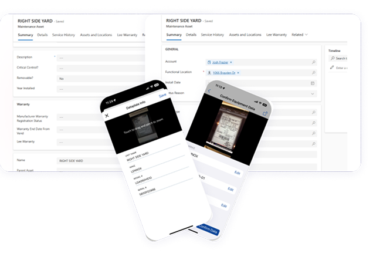

Letting customers book and pay on their own
Lee Company is a field-service company running on Microsoft Dynamics 365. Rev3 redesigned self-scheduling, added Stripe payments and refunds, and connected technician scans to the right assets in Dynamics.

The problem
The old booking flow was several steps long and didn't show availability until the end. About 80% of people dropped off before they got there. Customers couldn't cancel, reschedule or check a plan balance on their own, so dispatch and the call center triaged bookings by hand. And the whole thing lived inside a third-party widget that blocked future integration.
Self-scheduling
After stakeholder interviews, data analysis and lifecycle mapping, I designed a clickable Figma prototype built around real-time availability, contextual messaging and clean handoffs to a person when needed. The UI was planned to grow into billing, service plans, technician ETA and a customer portal.
Payments
Stripe payment links in customer emails, a card payment module inside Dynamics and Power Apps, and a refund workflow for the office team.
Field service integration
Technicians struggled to identify assets on site, and photos and serial numbers often didn't link to the right Dynamics record. Rev3 built an event-driven integration that takes scan events from the field app, matches them against Dataverse assets, updates the work order automatically, and logs anything unmatched for triage.

Measuring it
I wrote SQL against Lee's Field Service data to compare self-scheduled jobs with jobs booked the usual way, on both adoption and revenue, so Lee had real numbers on whether self-scheduling was paying off.